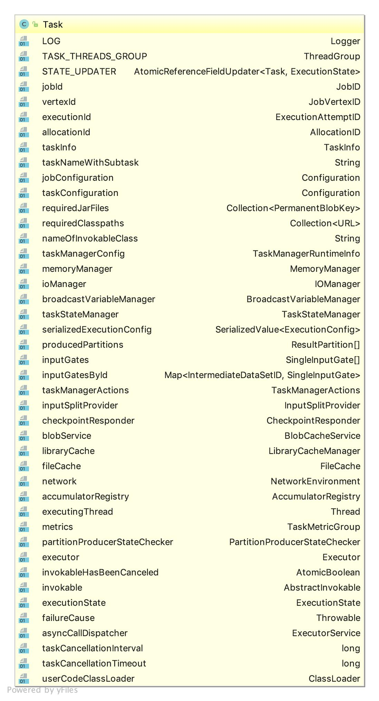
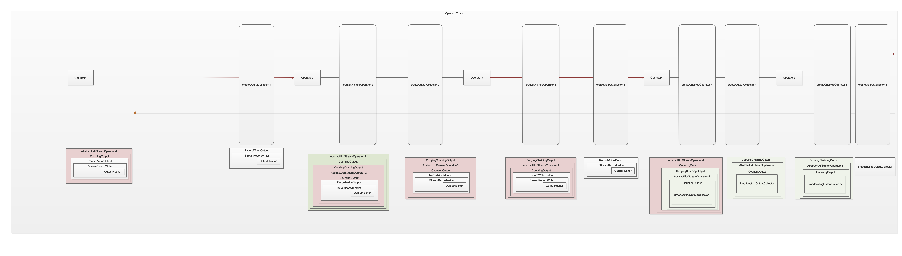
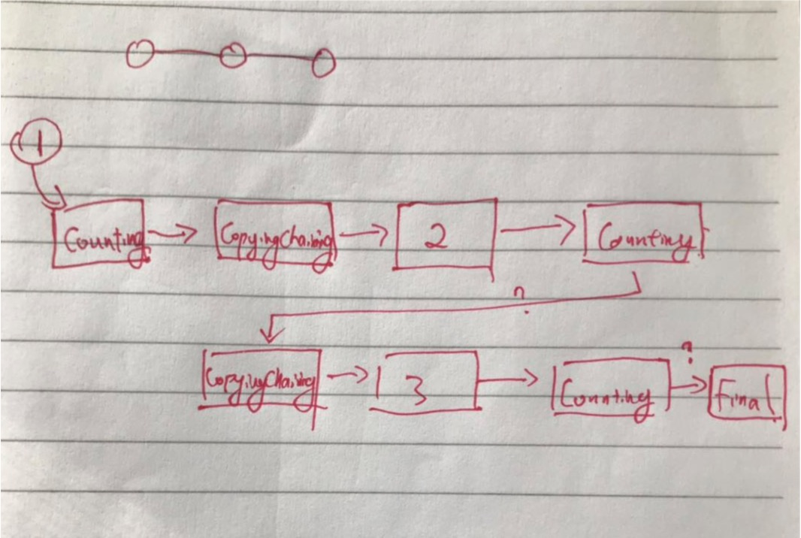
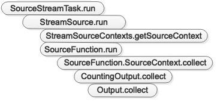

TaskExecutor.submitTask
新建Task

重点属性：
- jobId, vertexId, executionId, allocationId
- jobConfiguration, serializedExecutionConfig, taskConfiguration, taskManagerConfig
- nameOfInvokableClass
- memoryManager, ioManager, network, taskStateManager
- TaskManagerActions, CheckpointResponder, LibraryCacheManager, PartitionProducerStateChecker
- 每个ResultPartitionDeploymentDescriptor生成一个ResultPartition，包含：
- Task
- ResultPartitionManager
- ResultPartitionConsumableNotifier
- PipelinedSubpartition（父类ResultSubpartition）数组
- 每个InputGateDeploymentDescriptor生成一个SingleInputGate，包含：
- Task
- InputChannel数组。本地调试时是LocalInputChannel，包含：
- ResultPartitionManager
- TaskEventDispatcher
起Task线程
NetworkEnvironment.registerTask
- 对每个ResultPartition，调用NetworkEnvironment.setupPartition
- 在其中，向NetworkBufferPool申请LocalBufferPool
- 注册LocalBufferPool到ResultPartition中
- 注册ResultPartition到ResultPartitionManager中
- 注册ResultPartition到TaskEventDispatcher中
new RuntimeEnvironment
loadAndInstantiateInvokable
此步骤是实例化nameOfInvokableClass对应的类。一般是实例化OneInputStreamTask或者是SourceStreamTask。
- 在实例化时将RuntimeEnvironment传入
- 将每个ResultPartition、StreamPartitioner和bufferTimeout封装成StreamRecordWriter——StreamRecordWriter的主要工作在父类RecordWriter，StreamRecordWriter包含OutputFlusher做定期刷新。
OneInputStreamTask或者SourceStreamTask.invoke
自此上下文进入OneInputStreamTask或者SourceStreamTask范围
创建StateBackend并创建对应的CheckpointStorage
- 如果应用中有指定StateBackend则使用（优先级较高）
- 否则看有无默认的StateBackend，有则使用
- 否则创建MemoryStateBackendFactory作为兜底
创建OperatorChain
- 对于每一个StreamRecordWriter创建RecordWriterOutput
- 封装了StreamRecordWriter
- 加持了序列化信息 getTypeSerializerOut-> StreamElementSerializer->SerializationDelegate
- 将各个Operator串在一起
- 构建OperatorChain时调用每个AbstractUdfStreamOperator.setup
- 设置StreamTask
- 设置StreamConfig
- 封装Output为CountingOutput
- 对于RichFunction调用RichFunction.setRuntimeContext
在样例WordCount程序中有3个JobVertex，因此有3个OperatorChain。3个OperatorChain大概是这样的：

对于每一个Operator来说，它有一个output属性类型是CountingOutput，而且这个CountingOutput类也仅仅是个代理，它的作用实际是封装仅一个实际的Output类，这个Output类是什么取决于这个节点的下游是什么样的，如果这个节点的下游只有一个，那么就返回下游；否则就需要合并下游的若干个输出为一个

OneInputStreamTask或者SourceStreamTask.init
- SourceStreamTask：没什么用
- OneInputStreamTask：构建StreamInputProcessor
- 新建BarrierBuffer
- InputGate
- CachedBufferBlocker
- OneInputStreamTask
- TypeSerializer -> StreamElementSerializer -> NonReusingDeserializationDelegate
- 对每个InputChannel，新建SpillingAdaptiveSpanningRecordDeserializer
- StatusWatermarkValve
- InputChannelStatus数组
- ForwardingValveOutputHandler
- OperatorChain
- Operator
- 新建BarrierBuffer
initializeState
对于JobVertex中的每个Operator，调用AbstractStreamOperator.initializeState。1
2
3
4
5
6
7
8
9
10
11
12
13
14
15
16
17
18
19
20
21
22
23
24
25
26
27
28
29
30
31
32
33
34
35
36
37
38
39
40
41
42
43
44
45
46
47@Override
public final void initializeState() throws Exception {
final TypeSerializer<?> keySerializer = config.getStateKeySerializer(getUserCodeClassloader());
final StreamTask<?, ?> containingTask =
Preconditions.checkNotNull(getContainingTask());
final CloseableRegistry streamTaskCloseableRegistry =
Preconditions.checkNotNull(containingTask.getCancelables());
final StreamTaskStateInitializer streamTaskStateManager =
Preconditions.checkNotNull(containingTask.createStreamTaskStateInitializer());
final StreamOperatorStateContext context =
streamTaskStateManager.streamOperatorStateContext(
getOperatorID(),
getClass().getSimpleName(),
this,
keySerializer,
streamTaskCloseableRegistry,
metrics);
this.operatorStateBackend = context.operatorStateBackend();
this.keyedStateBackend = context.keyedStateBackend();
if (keyedStateBackend != null) {
this.keyedStateStore = new DefaultKeyedStateStore(keyedStateBackend, getExecutionConfig());
}
timeServiceManager = context.internalTimerServiceManager();
CloseableIterable<KeyGroupStatePartitionStreamProvider> keyedStateInputs = context.rawKeyedStateInputs();
CloseableIterable<StatePartitionStreamProvider> operatorStateInputs = context.rawOperatorStateInputs();
try {
StateInitializationContext initializationContext = new StateInitializationContextImpl(
context.isRestored(), // information whether we restore or start for the first time
operatorStateBackend, // access to operator state backend
keyedStateStore, // access to keyed state backend
keyedStateInputs, // access to keyed state stream
operatorStateInputs); // access to operator state stream
initializeState(initializationContext);
} finally {
closeFromRegistry(operatorStateInputs, streamTaskCloseableRegistry);
closeFromRegistry(keyedStateInputs, streamTaskCloseableRegistry);
}
}
- 获取StreamTaskStateInitializerImpl
- StreamTaskStateInitializerImpl.streamOperatorStateContext
- keyedStatedBackend
- operatorStateBackend
- StateBackend.createOperatorStateBackend, 对于MemoryStateBackend是DefaultOperatorStateBackend
- 创建StreamOperatorStateContextImpl
- StateInitializationContextImpl
- initializeState(StateInitializationContextImpl)。在其中会调用CheckpointedFunction.initializeState方法
openAllOperators
对于JobVertex中的每个Operator调用AbstractUdfStreamOperator.open。1
2
3
4
5@Override
public void open() throws Exception {
super.open();
FunctionUtils.openFunction(userFunction, new Configuration());
}
第一句super.open没有实际内容，所以实际是FunctionUtils.openFunction1
2
3
4
5
6public static void openFunction(Function function, Configuration parameters) throws Exception{
if (function instanceof RichFunction) {
RichFunction richFunction = (RichFunction) function;
richFunction.open(parameters);
}
}
FunctionUtils.openFunction的代码如下：可以看到如果是RichFunction就调用Function.open。
所以，总之这里是在真正启动之前，开了一个调用Function.open的一个口子
run
SourceStreamTask.run
OneInputStreamTask.run
注意数据采用的是拉模式，下游往上游的每个IRP去拉取数据。而上游的每个IRP可能会有多个输出，所以要告诉它自己是它的第几个输出。关于数据写出
上面都会涉及到一个关键步骤，即Output.collect数据是怎么最终写出去的。
如果到了Chain的末尾，Output是RecordWriterOutput类型
如果在Chain的过程中